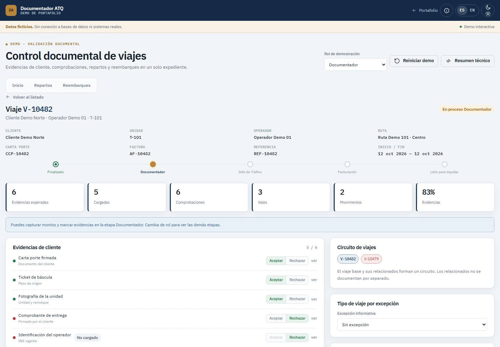
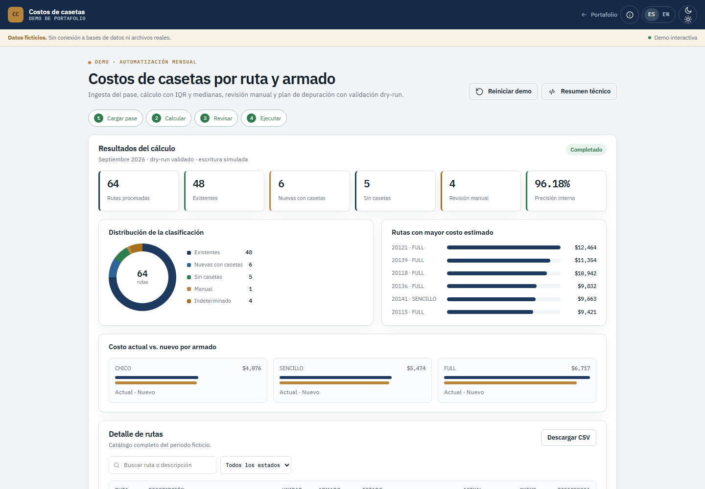
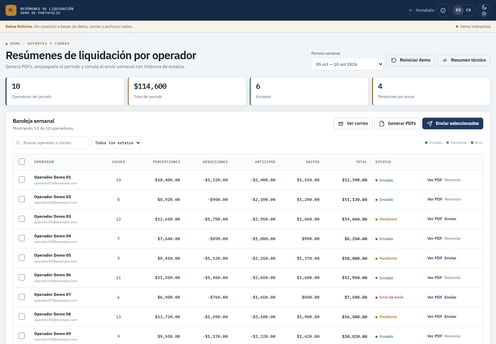
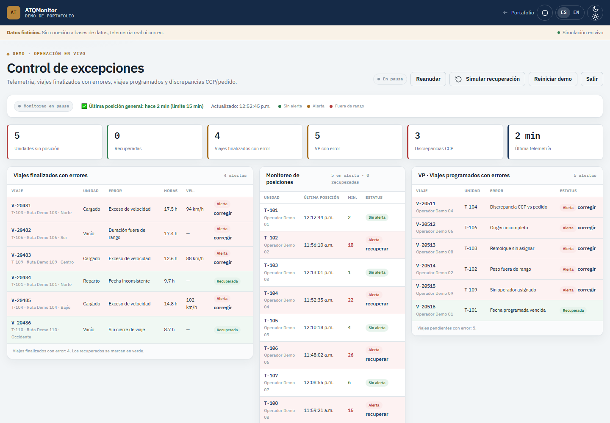

Datos para decidir
Consultas SQL, limpieza, validación y tableros que convierten registros operativos en indicadores accionables.
Convierto procesos operativos en sistemas de datos que se pueden medir: análisis con SQL, tableros en Power BI, automatización en Python y aplicaciones internas que reducen trabajo manual.
Lic. en Sistemas Computacionales Administrativos · Científico de datos
Soy licenciado en Sistemas Computacionales Administrativos y científico de datos. He trabajado en centros de operaciones de red, infraestructura tecnológica y análisis de datos para una empresa de transporte, siempre en la intersección entre la operación y la tecnología.
Me especializo en análisis con SQL, tableros de Power BI, automatización de procesos con Python y desarrollo de aplicaciones internas. Me gusta entender el proceso completo antes de escribir código: qué se mide, quién lo usa, qué decisión habilita y cómo se comprueba que funciona.
En proyectos de alcance amplio trabajo con SDD (Spec-Driven Development): primero la especificación, el plan y las tareas; después la implementación y las pruebas. No lo aplico como dogma, pero me ayuda a dejar decisiones y criterios verificables.
Consultas SQL, limpieza, validación y tableros que convierten registros operativos en indicadores accionables.
Pipelines en Python, generación de reportes, envíos programados y reglas de validación que reducen el trabajo manual.
Aplicaciones internas con flujos claros, permisos, trazabilidad y una interfaz que no estorba a la operación.
En cambios grandes documento alcance, reglas, tareas y criterios de prueba antes de escribir código. SDD me ayuda a mantener trazabilidad; en cambios pequeños prefiero ir directo.
Desde la consulta y la limpieza hasta el tablero, la automatización y la puesta en producción.
Trayectoria en entornos donde la disponibilidad, la precisión y la trazabilidad importan todos los días.
ISQUISA · Córdoba, Veracruz
Universidad para el Bienestar Benito Juárez · Cuapiaxtla, Tlaxcala
T-Systems · Puebla, México
Cada tarjeta abre una demo interactiva en el navegador. Son reconstrucciones funcionales con datos ficticios: no se conectan a bases de datos ni a sistemas de la empresa.

Web appFlujo de revisión de evidencias y comprobaciones de viajes con roles, etapas, visor de documentos, repartos y reembarques.

PipelinePipeline que ingesta el pase mensual, calcula costos por ruta y armado con IQR y medianas, y prepara una depuración con validación dry-run.

AutomatizaciónGeneración semanal de resúmenes por operador en PDF, empaquetado en ZIP y envío automático con bitácora de estatus.

MonitoreoPanel de control de telemetría, viajes con errores, discrepancias CCP/pedido y recuperaciones, con alertas simuladas por correo.
Formación aplicada en Python, estadística, modelos de machine learning y proyectos de datos de extremo a extremo.
Formación en sistemas, administración, bases de datos y tecnología aplicada a la operación.
Estoy abierto a oportunidades donde los datos, la automatización y el desarrollo de productos internos tengan un impacto medible en la operación.